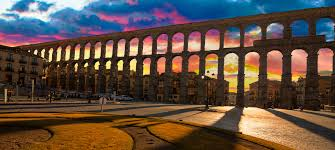
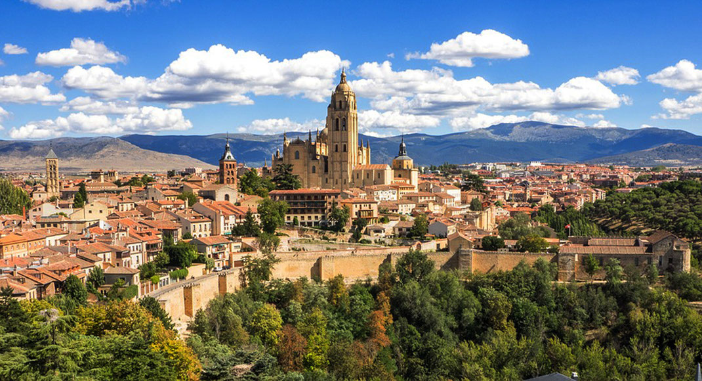

| Provincias | |
|---|---|
| León | |
| Zamora | |
| Salamanca | |
| Soria | |
| Ávila | |
| Palencia | |
| Burgos | |
| Valladolid |
Segovia se halla situada en el interior de la península ibérica, inmediatamente al norte de la sierra de Guadarrama, en la base de las montañas y al sur de la Submeseta Norte. El centro de la ciudad se encuentra a una altitud de 1002 metros sobre el nivel del mar,1 mientras que la altitud del municipio varía entre los 880 metros en el último tramo en el municipio del río Eresma, en el norte del mismo, y los 1400 metros en el cerro de la Cachiporra, al sur del municipio.
Segovia es una ciudad y municipio español en la parte meridional de la comunidad autónoma de Castilla y León, capital de la provincia del mismo nombre. Se sitúa en la confluencia de los ríos Eresma y Clamores, al pie de la sierra de Guadarrama. La ciudad vieja y el acueducto de Segovia fueron declarados Patrimonio de la Humanidad por la Unesco en 1985. El acueducto es considerado la obra de ingeniería civil romana más importante de España, y es uno de los monumentos más significativos y mejor conservados de la Antigua Roma en la península ibérica. El término municipal cuenta con una población de 51 674 habitantes
Segovia es una provincia española perteneciente a la comunidad autónoma de Castilla y León, situada al norte del sistema Central que divide en dos la altiplanicie del centro de la península ibérica.
Su capital es la ciudad homónima de Segovia. Tiene una superficie de 6920,65 km², siendo la provincia de menor extensión de Castilla y León, y cuenta con una población de 154 184 habitantes
Consta de 209 municipios y 17 entidades locales menores. En materia judicial, la provincia está dividida en cuatro partidos judiciales: el de Cuéllar, de Santa María la Real de Nieva, de Segovia y de Sepúlveda. Para elegir los diputados que forman el pleno de la Diputación Provincial, a estos cuatro se añade el Partido Judicial de Riaza.
Foto extraida de spain.info
Las principales localidades son Cantalejo,Cuellar,El espinar,La Granja de San Ildefonso y Segovia
De acuerdo a la clasificación climática de Köppen se puede considerar el clima de Segovia como de transición entre el tipo Csa (mediterráneo) y el tipo Csb (mediterráneo oceánico). En efecto el clima puede ser de tipo Csa en las zonas bajas del municipio y de tipo Csb en las zonas de mayor altitud, incluso en la parte más alta de la zona urbana
El clima de Segovia está determinado por su elevada altitud, su proximidad al sistema Central y su alejamiento de la costa; la temperatura anual tiene un promedio de 11,5 °C, con mínimas absolutas en diciembre de −17,0 °C (6 de enero de 1938) y máximas en julio de 39,7 °C (16 de julio de 1920);7 la precipitación anual es de 464 mm anuales, lo que hace de la provincia un rincón húmedo en el contexto de la Meseta.
La vegetación predominante en las áreas montañosas es de pino negral, pino piñonero, silvestre, roble, haya, piorno y enebro, dejando paso en la zona sedimentaria a la encina y a las superficies cerealísticas, con paisajes de trigales, rastrojos y barbecheras.
El crecimiento de la población experimentado a lo largo del siglo xix se aceleró a partir de 1920: 16 013 habitantes ese año, 33 360 en 1960, 53 237 en 1981. A partir de la década de 1980 el crecimiento se ralentiza notablemente: 55 586 en 2004 y 56 047 en 2007.
El poblamiento humano en el entorno de lo que hoy es Segovia se remonta a hace unos 60 000 años, fecha en que ha sido datada la ocupación neandertal del Abrigo del Molino en el valle del Eresma, a tan solo 500 m del emplazamiento del alcázar. Fueron pues, los neandertales, los primeros en ocupar el territorio de lo que con el tiempo se convirtió en la ciudad de Segovia.
Cerca de este abrigo, en la cueva de la Tarascona y en otros emplazamientos al aire libre en el entorno periurbano de Segovia, se localizan evidencias del Calcolítico y la Edad del Bronce. En el lugar que hoy ocupa el alcázar existía un castro celtíbero, del que se conocen algunas evidencias, como su posible foso. Durante la época romana, Segovia pertenecía al convento jurídico de Clunia.
En la Hispania visigoda fue sede episcopal de la Iglesia católica, sufragánea de la Archidiócesis de Toledo que comprendía la antigua provincia romana de Cartaginense en la diócesis de Hispania.
Se cree que la ciudad fue abandonada tras la invasión islámica. Tras la conquista de Toledo por Alfonso VI de León, el yerno del rey Alfonso VI, el conde Raimundo de Borgoña, junto con el primer obispo de su reconstituida diócesis, empezó la repoblación de Segovia en 10884 con cristianos procedentes del norte de la península y de más allá de los Pirineos, dotándola de un amplio concejo cuyas tierras cruzaban la sierra de Guadarrama e incluso la línea del Tajo.
Durante el siglo xii sufrió importantes disturbios en contra de su gobernador, Álvar Fáñez, y posteriormente como parte de las luchas del reinado de Urraca de Castilla. A pesar de estos desórdenes, su situación en las rutas de la trashumancia la convirtió en un importante centro del comercio de la lana y de las manufacturas textiles (cuya existencia está documentada desde el siglo xii). El final de la Edad Media es una época de esplendor, en la que acoge una importante aljama hebrea; sienta las bases de una poderosa industria pañera; desarrolla una espléndida arquitectura gótica y es corte de los reyes de la Casa de Trastámara (ya Alfonso X el Sabio había acondicionado el alcázar como residencia real). Finalmente, en la iglesia de San Miguel de Segovia Isabel la Católica es proclamada reina de Castilla el 13 de diciembre de 1474.
Como todos los centros textiles castellanos, se unió a la sublevación de las comunidades, teniendo una intervención destacada, al mando de Juan Bravo.
A pesar de la derrota de las comunidades, el auge económico de la ciudad continuó durante el siglo xvi, llegando en 1594 a 27 000 habitantes. Después, como casi todas las ciudades castellanas, entró en decadencia, de forma que apenas un siglo después, en 1694, sólo contaba con 8000 habitantes.
A principios del siglo xviii se intentó revitalizar su industria textil, con escaso éxito. En la segunda mitad del siglo, dentro de los impulsos ilustrados de Carlos III, se hace un nuevo intento de revitalización creando la Real Compañía Segoviana de Manufacturas de Lana (1763). Sin embargo, la falta de competitividad de su producción hizo que la corona le retirase su patrocinio (1779). También en 1764 se había inaugurado el Real Colegio de Artillería, la primera academia militar de España, que todavía se encuentra en la ciudad.
En 1808 fue saqueada por las tropas francesas durante la guerra de la Independencia. Durante la primera Guerra Carlista las tropas del pretendiente Carlos de Borbón atacaron sin éxito la ciudad. Durante el siglo xix y primera mitad del xx, experimentó una recuperación demográfica fruto de una relativa revitalización económica.
Foto extraida de hoteles.net
Los archivos que más destacan son el historico general y el general militar.
El Archivo Histórico Provincial está situado en una antigua casa solariega junto a la iglesia de San Quirce y fue creado en 1947 para albergar los registros protocolarios de la provincia. Sus fondos documentales están compuestos por siete archivos públicos: judicial, fe pública, administración central periférica, administración autonómica, instituciones del movimiento nacional y administración corporativa. Además, cuenta con dos archivos privados, el de la familia Arias Dávila y el del Condado de Velarde, y alberga diversas colecciones de documentos textuales, figurativos y audiovisuales.
El Archivo General Militar de Segovia es el más antiguo de las Fuerzas Armadas y fue creado por la reina María Cristina en 1898 para reagrupar los archivos dependientes del entonces Ministerio de la Guerra. Está dividido en dos sedes, el alcázar de la ciudad y la Casa de la Química, y custodia unos 75 000 legajos de carácter militar que ocupan 16 000 metros de estanterías
Anualmente, cada mes de septiembre, se celebra en la Real Academia de Historia y Arte de San Quirce el Seminario de Historia Medieval organizado por la Universidad Nacional de Educación a Distancia.
En lo relativo a festivales artísticos, se celebran Titirimundi, HAY festival, Semana de Música Sacra, la Muestra de Cine Europeo de Segovia (MUCES), Folk Segovia, Festival de Segovia, Festival Internacional de Danzas de la ESTEVA y la Carrera del Pavo.
En cuanto a itinerarios culturales, el Camino de Santiago de Madrid comienza en la ciudad que le da nombre y en sentido noroccidental, conduce a los peregrinos hacia Sahagún pasando por Segovia, donde se juntan con los que se dirigen a Santiago por el Camino Francés.
Las Huellas de Santa Teresa son una ruta de peregrinación, turística, cultural y patrimonial que reúne las diecisiete ciudades donde santa Teresa de Jesús dejó su "huella" en forma de fundaciones.29 La ruta no tiene un orden establecido o un tiempo limitado ya que cada peregrino o visitante puede realizarla cómo y en el tiempo que desee.
Video extraido del canal de Youtube "Epic Media."
Los 10 paisajes principales de Segoia son:
1- LA BOCA DEL ASNO. Es indudable que el entorno de la Sierra de Guadarrama atesora no uno, decenas y decenas de pequeños rincones en los que tomarse ese respiro de naturaleza y libertad. Pero apuntamos aquí este, en concreto, por ser uno de los más socorridos. También porque es punto de arranque de deliciosos paseos por esta sierra. El acceso se localiza en la carretera de subida desde La Granja hacia el puerto de Navacerrada. Y además de estar equipado con mesas y aparcamiento cuenta con el añadido del Centro Interpretación Montes y Aserradero de Valsaín. Su visita sirve para conocer mejor todo el entorno y las razones que llevaron a declararlo Reserva de la Biosfera y, recientemente, Parque Nacional.
2- LOS ASIENTOS. Otro clásico entre las áreas recreativas del entorno de Valsaín se encuentra, como La Boca del Asno, en la subida hacia Navacerrada. De hecho existe la posibilidad de ir de la una a la otra, acompañando el discurrir del Eresma, en unos 20 minutos de agradable paseo pinariego. Otro apetecible paseo, este río abajo, consiste en seguir las Pesquerías Reales -el acondicionamiento realizado con losetas en tiempos de Carlos III- hasta el Puente los Canales, una original construcción que salva el río Eresma, realizado en época de Carlos V, que permitía llevar, mediante el canal que sustenta, las aguas del arroyo de Peñalara hasta los jardines del palacio de Valsaín. La excursión se puede prolongar hasta las escasas ruinas que quedan de este palacio en la localidad de Valsaín.
3- EL CHORRO GRANDE DE VALSAÍN. Sus 700 metros de rampas lo convierten en el mayor salto de agua de la sierra de Guadarrama. Y durante el invierno en un auténtico tobogán de hielo con mucho peligro de caída mortal si se traspasa el límite del disfrute sensato. Es decir, llegar hasta donde se pueda sin salirse de los caminos marcados ni tratar de asomarse a un vacío más peligroso de lo que parece. El camino de acceso hay que recorrerlo a pie desde la urbanización Seo de Urgel, en el costado oriental de la localidad de San Ildefonso-La Granja. Un cartel madera indica que desde ella hasta el Chorro se tardan unos 45 minutos. Para encontrar el camino hay que seguir la calle Camino del Chorro hasta que, al comienzo de una curva, frente al número 51, se desgaja un pequeño callejón. Al fondo de ese callejón se localiza la cancela que da paso al robledal por el que discurre la primera parte del paseo. Es la mata de Navalosar. Sin abandonar el camino principal, como a un kilómetro y medio de la cancela, se vadea el cauce artificial que desvía agua del arroyo del Chorro hacia el del Molinillo. El sendero prosigue ya pegado al arroyo, cruza un pequeño ramal y, tras atravesar una breve zona de matorral conduce hasta una tercera cancela, por la que se sale a un cortafuegos. Si se toma el ramal del medio se ve enseguida la continuación del sendero, marcado junto al cauce del arroyo. Es el miso que sin cruzar ya el arroyo lleva hasta la base rocosa de la cascada.
4- EL RÍO PIRÓN. Las orillas de este río segoviano ofrecen la oportunidad de un paseo de lo más tentador. Este se puede arrancar en la ermita de la Octava, un poco antes de llegar a Peñasrubias. Pero para buscar el camino que remonta las aguas del Pirón hay que atravesar este pueblo y buscar la salida por el lado opuesto. Una vez localizado el camino que se acerca al río basta seguirlo por su orilla derecha mientras se recala en lugares como el molino de Covatillas. Río arriba, la senda fluvial conduce, en 700 metros, hasta el bello puente medieval que salva el Pirón a la altura del caserío de Covatillas. Sin cambiar de orilla, un poco más allá del puente sorprende una original fuente que deja escapar su agua por la boca de siete fieros leones, guardianes del escudo nobiliario que queda, medio borrado, en medio. El paseo prosigue sin pérdida por esa orilla hasta alcanzar la ermita rupestre de Santiaguito, en mitad del paredón de caliza y en una zona donde se han localizado otros refugios de ermitaños. La vuelta puede hacerse por la orilla opuesta hasta el puente medieval.
5- EL CHORRO DE NAVAFRÍA. Este salto de agua se sitúa en el interior del área recreativa del mismo nombre, muy concurrida en verano debido a sus piscinas naturales, en los pinares guadarrameños que rodean la localidad segoviana de Navafría. En realidad se trata de una sucesión de toboganes rocosos por los que se descuelga el agua del arroyo del Chorro hasta que termina su carrera precipitándose en un fresco y oscuro pozo. Muchos días del invierno este tobogán permanece tan helado que la torrentera prácticamente desaparece. Desde Segovia se llega, en 35 kilómetros, tomando la N-110 en dirección a Soria. Nueve kilómetros después de Collado Hermoso sale un desvío a la derecha que, en 1 kilómetro más, lleva hasta Navafría.
6- ERMITA DE HONTANARES. En un claro abierto entre los robledales que tapizan las laderas de la sierra de Ayllón, a un paso de la localidad de Riaza, se localiza esta ermita. Está ahí desde 1606 por voluntad de los vecinos, que la cuidan y conservan desde entonces. En su entorno, además de mesas y sombra, se localiza también una buena colección de senderos con los que ponerse las botas. Pero uno de los mayores atractivos de este lugar es el paisaje que se contempla. Siguiendo un kilómetro la pista que sube hasta la ermita se alcanza el mirador de Piedrasllanas. No hay mejor balcón para asomarse a una tierra que por aquí se pinta con el rojo intenso de sus arcillas y el negro de sus pizarras. Con la cumbre del pico Buitrera (2.045 m.) a la espalda, la llanada segoviana extiende su manto de ocres hasta donde alcanza la vista, que es tanto como que los Picos de Urbión se divisan allá al fondo entre las brumas.
7- EL SABINAR DE HORNUEZ. Lo verdaderamente asombroso del espacio natural del Enebral -o sabinar- de Hornuez son la dimensiones de los árboles que encontramos en él. Mucho más si sabemos que, precisamente, la sabina es un árbol de “crecimiento lento”. Osea, no más de 50 centímetros al año. En el entorno de Moral de Hornuez, y de la ermita de Nuestra Señora de Hornuez, a dos kilómetros de la localidad, se extiende uno de los sabinares más notables de la Península. Allí, en un paraje acondicionado con mesas y envuelto por el halo de varias leyendas, el sabinar ha perdurado lo suficiente como para que a muchas de sus sabinas haya que tomarle la medida de su tronco entre varias personas.
8- EL HAYEDO DE LA PEDROSA. Su interés no está en la extensión, apenas 87 hectáreas, si no en la proeza de haberse convertido en uno de los hayedos más meridionales de Europa. Y el único del Sistema Central. Es sabido que el hayedo, para prosperar como debe, gusta de umbrías, de humedad y suelos frescos, por eso el de la Pedrosa está como fuera de lugar, a lomos de la sierra de Ayllón, en el paso de La Quesera hacia Guadalajara. Aunque la visita al hayedo ya es suficiente excusa, las vistas de la llanada segoviana desde lo alto del puerto serían de por sí un reclamo más que suficiente.
9- LAS HOCES DEL RIAZA. Las hoces rubicundas que desmadeja el río Riaza entre el embalse de Linares y la localidad de Montejo de la Vega de la Serrezuela guardan un corazoncito tan achacoso que mueve a compasión sólo mirarlo. En un meandro privilegiado, abierto como una isla entre las angosturas del largo cañón terroso que labra el Riaza, se mal tienen en pie la espadaña y cuatro paredes de la ermita del Casuar. Este parque natural se puede recorrer, dependiendo de la época del año, de varias maneras, una de ellas, poco habitual, consiste en acercarse al Causar desde Valdevacas de Montejo. Tras alejarse unos metros del pueblo, la pista agrícola que en cinco kilómetros lleva hasta las ruinas, se divide en uve. El ramal de la izquierda, siempre en descenso, lleva por el fondo del barranco en cinco kilómetros hasta la confluir con el de Riaza.
10- EL RÍO AGUISEJO. El Aguisejo como río no es gran cosa pero cuenta entre su periplo vital cinco kilómetros que pueden dar mucho gusto a quien se anime a recorrerlos. Son los que median entre su nacimiento, en Grado del Pico, y Santibáñez de Ayllón. Cinco kilómetros que transcurren por un escondido barranco de fondo verde y fragoso que no admite desvíos ni a derecha ni a izquierda. El nacimiento es, propiamente, un ojo de aguas cristalinas que se localiza a 1,5 km de Grado del Pico, junto a la tapia del balneario La Senda de los Caracoles.
Fiesta de la Virgen de la Fuencisla (25 de septiembre), patrona de Segovia. El día de la mayor celebración es el último domingo del mes. Dos jueves antes la Virgen sube desde su santuario en la alameda de la Fuencisla a la catedral para empezar la novena. Durante los nueve días siguientes se celebra la novena en la catedral, en la que se canta el himno de la Fuencisla, y el último domingo del mes la Virgen vuelve a su santuario. Puesto que la Virgen es capitán general de Artillería (lo cual viene indicado por el bastón de mando y el fajín que tiene a sus pies) desde el 24 de septiembre de 1916, en sus viajes entre el santuario y la catedral va acompañada por los cadetes de la Academia de Artillería y por la banda de música. El día que vuelve al santuario va acompañada por los cadetes hasta la plaza del Azoguejo, donde se canta una salve. Hasta hace unos años había exhibiciones de jotas castellanas en la alameda de la Fuencisla a la llegada de la Virgen; últimamente las jotas se bailan en el propio Azoguejo.
Fiesta de San Lorenzo (en torno al 10 de agosto), es la fiesta de uno de los barrios más populares de la ciudad.
Ferias y Fiestas de San Juan y San Pedro (entre los días 24 y 29 de junio), son las fiestas más señaladas de la ciudad y se vienen celebrando desde el siglo xv.
Festividad de San Frutos (25 de octubre), patrón de Segovia. A media mañana se canta en la catedral el villancico de San Frutos, tras el cual suele haber distintas actividades en la plaza Mayor, como un pregón, un concierto de la Banda de la Unión Musical Segoviana, exposiciones de micología, etc. En los últimos años los pasteleros de Segovia han inventado un postre del santo. En la noche anterior a San Frutos se congregan los segovianos ante la imagen del santo que hay a la puerta de la catedral para verle pasar la hoja del libro que sostiene.
Semana Santa: Segovia tiene diez cofradías, que son: la Oración en el Huerto (perteneciente al barrio de San Lorenzo), la Resurrección del Señor (perteneciente al barrio de Nueva Segovia), Cristo con la Cruz a Cuestas (perteneciente a ADEMAR), el Santo Cristo de la Cruz (perteneciente al barrio del Cristo del Mercado), el Santo Cristo de San Marcos (perteneciente al barrio de San Marcos), la Soledad al Pie de la Cruz (perteneciente al barrio de San Millán), Nuestra Señora de la Piedad (perteneciente al barrio de San José), Real Cofradía de la Santa Esclavitud (perteneciente al barrio de El Salvador), Feligresía de San Andrés (perteneciente al barrio de San Andrés) y la Soledad Dolorosa (perteneciente al barrio de Santa Eulalia).
Video extraido del canal de Youtube "La 8 Segovia."
Las tierras de la provincia aportan diversos productos, comenzando por el alimento más popular, el pan, o la leche, base de los quesos de la provincia de Segovia. El tierno lechazo asado o el cochinillo son parte de la oferta de carnes de los restaurantes de la capital, completada por los diversos productos obtenidos de la matanza del cerdo, ritual este que todavía se celebra en los pueblos de la provincia durante los meses más fríos.
Entre los postres pueden encontrarse rosquillas, soplillos, florones, hojuelas, tortas y, sobre todo, el ponche segoviano, de cremoso interior y tostada apariencia. Entre los vinos existen algunos producidos en la provincia como los Blancos de Nieva o los Tintos de Valtiendas.
Actualmente se encuentra en 3ª División Nacional de Fútbol la Gimnástica Segoviana. También cabe destacar el fútbol sala en esta ciudad donde Caja Segovia FS llegó a ser campeón del mundo en el 2000. Actualmente sigue jugando en la 1ª División de Fútbol Sala bajo el nombre de Segovia Futsal. En cuanto a deportes minoritarios, Segovia tiene gran tradición en atletismo, ciclismo y en los últimos años en triatlón, siendo actualmente el club Triatlón Segovia 2016 uno de los mejores equipos de triatlón de España.
El 25 de diciembre de cada año se disputa la tradicional Carrera del Pavo. El 18 de marzo de 2007 se celebró la 1ª Media Maratón de Segovia, en la que participaron unos 1450 atletas. La carrera tuvo gran éxito y se espera celebrar muchas ediciones. De momento son ya 13 las ediciones celebradas, habiendo finalizado 2202 corredores la última edición (2019)